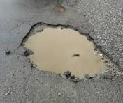
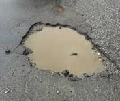
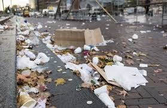

Buracos nas Ruas
A situação das ruas da cidade tem se agravado com o aumento de buracos e crateras, dificultando a locomoção e colocando em risco a segurança de motoristas e pedestres.
Status: Pendente
A situação das ruas da cidade tem se agravado com o aumento de buracos e crateras, dificultando a locomoção e colocando em risco a segurança de motoristas e pedestres.
A coleta de lixo tem sido irregular em várias partes da cidade, o que resulta no acúmulo de resíduos e compromete a saúde pública e a qualidade de vida dos cidadãos.
